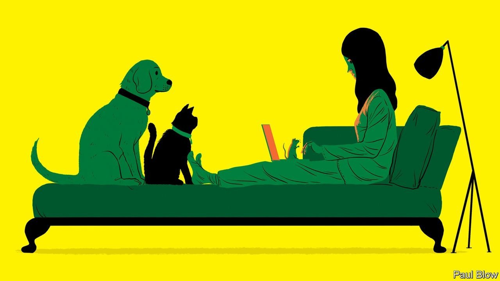
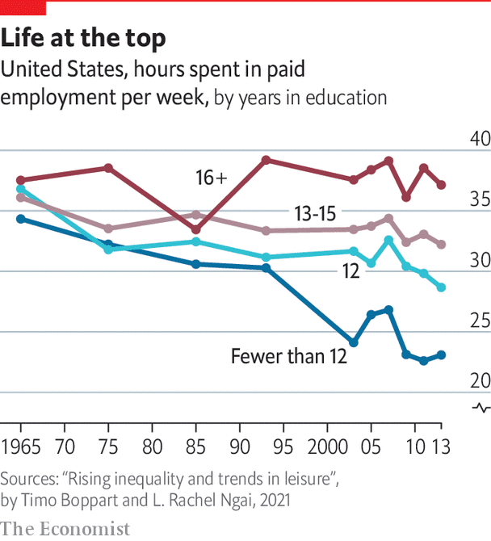

The shift to a hybrid world of work will have a big impact on managers

A POPULAR CLICHé of 2020 was that covid-19 accelerated pre-existing trends. Yet that is a poor description of the massive rupture to office work. Before the pandemic Americans spent 5% of their working time at home. By spring 2020 the figure was 60%. The shift has gone better than expected. People are working longer hours, but they report higher levels of happiness and productivity. As lockdowns lift, working from home is likely to stay.
Listen to this story.Enjoy more audio and podcasts on iOS or Android.
Listen to this story
Save time by listening to our audio articles as you multitask
A growing body of research points to what post-pandemic working patterns may look like. In one paper José Maria Barrero, Nick Bloom and Steven Davis, three economists, survey thousands of Americans and conclude that, after the pandemic, the average employee would like to work from home nearly half the time. Employers are less keen, but their expectation that a fifth of working time will be spent at home (one day a week) is a big change from the previous norm. It also presents a huge opportunity for office-based workers.
In places that have conquered covid-19, working from home has stuck—though perhaps not as much as some people might have hoped. Data for New Zealand show that, in the three months to December 2020, 27% of people in employment worked at home at some time during the week. Direct pre-pandemic comparisons do not exist, but there is little doubt that this represents a big increase. Tracking data from Google suggest that attendance at South Korean workplaces has settled at a level marginally lower than it was before covid-19.
The shift to a hybrid world of work means that some fanciful predictions from early in the pandemic will not come to pass. “Remote-only” companies will remain a small minority. Firms will continue to “onboard” new staff in the old-fashioned way—they can do it in an office, rather than by video-link—while junior staff will still have an opportunity to skulk by the lifts in hopes of grabbing five minutes with the chief executive. Cities will not empty. Firms will not swap their full-time staff for freelancers, which might be tempting if the workforce were wholly remote.
Yet the blurring of home and office will have huge consequences. It will force managers to raise their game, improving office life for all. It will lead to changes in employment law to offer better protection for workers who spend less time in the office. And less positively, it will deepen political and cultural divisions between cosseted knowledge workers and the rest.

Take corporate life. Too often claims that businesses are committed to transparency, integrity and communication are boilerplate platitudes. Studies find no correlation between the supposed core values of companies and employees’ assessment of how they reflect them. But change is afoot. In a report for the MIT Sloan Management Review, Don Sull of MIT and Charles Sull of CultureX, which advises firms, analysed workers’ ratings of the culture and values of their employers. There was a jump in approval when the pandemic broke out, with especially big increases in employees’ ratings for transparency and communication.
Other studies find similar results. A poll by Gallup covering the early part of the pandemic finds that the share of American employees “engaged” at work reached its highest level since data began in 2000. Another survey, by Quantum Workplace, a software firm, takes the views of thousands of people and finds that the share of “highly engaged” employees leapt during the pandemic. “Covid-19 may be the best thing that ever happened to employee engagement”, argues Josh Bersin, an analyst.
One reason is that blurring the line between work and home makes it harder for firms to treat office staff as automatons. “Before the pandemic,” says Monica Kang, founder of InnovatorsBox, a workplace-culture firm, “we forgot that people are people first.” During it, the sight of children invading Zoom meetings or of people’s laundry in the background will have softened even hard-nosed managers, prompting them to pay more attention to their staff.
Another is that remote work has forced people to communicate better. Managers cannot just hope subordinates will pick up information by osmosis, as in an office. Instead they have to work to get the message across, argues Tomas Chamorro-Premuzic of Columbia University. This can be done the old-school way: by picking up the phone. But that seems increasingly clunky. The pandemic has encouraged managers to place more trust in technology that lets workers communicate and collaborate effectively, even when out of the office. Research by Mr Bloom, Mr Davis and Yulia Zhestkova finds a big rise in the share of new patent filings for work-from-home technologies.
The idea of managers using tools to talk to and monitor workers in their own homes may be disconcerting, but it is usually legal. Yet the rise of hybrid work has other legal effects—the second consequence. Just as the rise of the gig economy makes it harder to say who is an employee and who is self-employed, so the rise of working from home tests the boundaries where employees’ and employers’ responsibilities begin and end. Employment law, after all, is largely based on the assumption that work takes place at an office or a factory.
It is hard to assess the legal impact of the shift to hybrid work. Analysis of American legal filings in state and federal courts finds that the number of cases mentioning “work from home” is running at twice pre-pandemic levels. A brief by lawyers in the state of New York warns that employers have done a poor job of record-keeping for home-workers during the pandemic, so “management will have difficulty defending a worker’s claim that she is owed overtime pay because she worked more than 40 hours in a week”. Several north-eastern states are in a legal battle over which government should have the income tax of an employee whose office is in one but who works from home in another.
Other countries are also realising the limitations of existing laws. Last year some Russian businesses exploited a loophole in the law that allowed them to cut pay for people who were no longer working in an office. And whereas the past year has shown the many benefits of working from home, for both productivity and the work-life balance, in many countries workers do not have the right to ask for it.
All this is causing many to update the rules. “In recent months, we have seen an upsurge in new laws regulating remote work [and] telework—a trend we expect to continue,” says DLA Piper, a law firm. Russia has closed the pay-remote-workers-less loophole. Germany has explored the idea of giving employees the right to work remotely for a set number of days a year. Ireland is likely to follow Britain in creating a legal right to request working from home (though employers will be under no obligation to agree). France is temporarily binning a law that made it illegal for workers to eat at their desks. This was designed to prevent overwork, but seemed oddly anachronistic when the domestic and professional spheres are one and the same.
The third big consequence relates to culture and politics. Before the pandemic a growing divide was rising between the less- and the more-educated, not just in what they earned, but also in what their work meant to them. In recent years the working hours of the less-educated have continued to decline, perhaps because rising real wages make it easier to attain a satisfactory standard of living. But for the more-educated, working hours have risen. Research suggests this is because they increasingly enjoy their job. Doing work well is, for many knowledge workers, a big part of their identity and sense of self-worth.
Even before the pandemic, knowledge workers and others were drifting apart, not just economically but culturally. Now one of the few things that previously bound them together—the shared experience of getting up every day and taking a long, expensive, sweaty commute to work—is also fraying.
Good jobs tend to be those that can be done from home. The best-educated are also the most likely to be allowed to continue working for part of the week out of the office. So well-paid folk with good jobs are likely to have the flexibility to pick up children from school or run other errands. Their interactions with those with worse jobs—the “essential workers”, who move about in public spaces and keep the economy going—might become, at the extreme, little more than opening the door for a delivery. It is not easy to predict the political consequences of this new cleavage, but they seem unlikely to be benign. ■